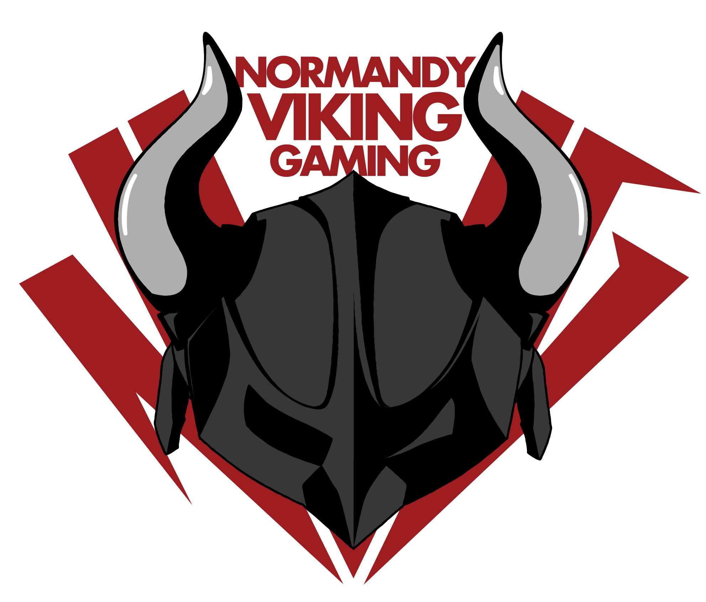

Normandy Viking Gaming — Application Companion
Dernière mise à jour : 29 octobre 2026
La présente politique décrit les données personnelles traitées par l'application Normandy Viking Gaming — Companion (ci-après « l'Application »), accessible à l'adresse app.nvg-tv.com et via son application mobile Android. Elle s'applique à toute personne créant un compte ou utilisant l'Application (ci-après « l'Utilisateur »).
Le responsable du traitement des données est Normandy Viking Gaming, association déclarée en loi 1901, dont le siège est situé 8 square des Capucines, 61220 Briouze (RNA W612003127).
Contact : contact@nvg-tv.com
L'Application ne collecte que les données nécessaires à son fonctionnement. Aucune donnée n'est vendue, louée ou transmise à des fins publicitaires.
| Donnée | Finalité | Caractère |
|---|---|---|
| Pseudo, adresse e-mail, mot de passe | Création et gestion du compte, authentification, communications liées au service | Obligatoire |
| Avatar (image ou URL) | Personnalisation du profil au sein de la communauté | Facultatif |
| Rang et rôle dans la communauté | Gestion des droits d'accès aux espaces de l'Application | Obligatoire |
| Présences aux événements : heure d'arrivée prévue, statut de covoiturage, matériel apporté | Organisation logistique des événements de la communauté | Facultatif |
| Propositions de jeux et votes | Vie de la communauté, choix des activités | Facultatif |
| Abonnement aux notifications push (identifiant technique de l'appareil) | Envoi de notifications relatives aux événements et à la communauté | Facultatif, sur consentement |
| Date de confirmation de l'adresse e-mail | Sécurité du compte et vérification des membres | Obligatoire |
Le mot de passe n'est jamais accessible en clair. Il est stocké sous forme hachée par le service d'authentification. L'Application n'accède ni ne conserve les mots de passe.
Les données sont accessibles aux administrateurs de Normandy Viking Gaming dans la limite de leurs attributions. Elles sont hébergées et traitées par les prestataires suivants :
L'Application n'utilise aucun cookie publicitaire, aucun outil de mesure d'audience et aucun traceur tiers.
Elle utilise le stockage local du navigateur ou de l'appareil uniquement pour conserver la session de connexion, afin d'éviter de ressaisir ses identifiants à chaque visite. Ce stockage peut être supprimé à tout moment en se déconnectant ou en effaçant les données de l'Application.
L'hébergeur conserve par ailleurs des journaux techniques d'accès, nécessaires à la sécurité et au bon fonctionnement du service.
Conformément au Règlement général sur la protection des données (RGPD) et à la loi Informatique et Libertés, l'Utilisateur dispose des droits suivants :
Ces droits s'exercent par simple demande à contact@nvg-tv.com. Une réponse est apportée dans un délai maximal d'un mois.
En cas de désaccord persistant, l'Utilisateur peut introduire une réclamation auprès de la CNIL — 3 place de Fontenoy, TSA 80715, 75334 Paris Cedex 07 — www.cnil.fr.
Pour supprimer définitivement votre compte et les données associées, adressez une demande à contact@nvg-tv.com avec l'objet « Suppression de compte », en précisant le pseudo ou l'adresse e-mail du compte concerné.
La suppression est effective dans un délai maximal de 30 jours. Les contributions anonymisées à l'historique des événements peuvent être conservées sous forme non identifiante.
Les échanges sont chiffrés (HTTPS). L'accès aux données est restreint par des règles de sécurité appliquées au niveau de la base de données, en fonction du rang et du rôle de chaque Utilisateur. Les mots de passe sont hachés et jamais stockés en clair.
L'Application s'adresse à un public de joueurs. Les personnes âgées de moins de 15 ans doivent obtenir l'autorisation de leur représentant légal avant de créer un compte, conformément à la réglementation applicable.
Cette politique peut être mise à jour afin de refléter une évolution de l'Application ou de la réglementation. La date de dernière mise à jour figure en haut de cette page. Les modifications substantielles sont portées à la connaissance des Utilisateurs via l'Application.
Pour toute question relative à cette politique ou au traitement de vos données : contact@nvg-tv.com.